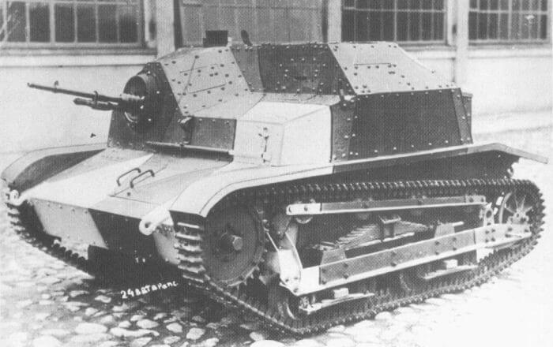

Polish Armoured Cars
TODO: Armoured blurbCK Wzór.28 (Derela.Republic).
Wzór 28
- Year: 1928.
- Vehicle Type: Armoured Half-Track.
- Total: 90 (30 x 37mm & 60 x Machine Gun).
- Crew: 3 (Commander, Gunner & Driver).
- Main Armament: 1 x 37mm L21 Wz.18 Gun or 1 x 7.92mm Wz.25 Machine Gun.
- Elevation: -13° to +42°.
- Traverse: 360° (Manual).
- Gun Sight: Telescopic.
- Secondary Armament: None.
- Ammunition Carried: 90 x 37mm or 2000 x 7.92mm.
- Weight: 2.300 kg.
- Length: 3.50m.
- Width: 1.40m.
- Height: 2.10m.
- Ground Clearance: 0.28m.
- Fording Depth: 0.50m.
- Climbing Ability: 35°.
- Radio: None.
- Armour: Hull Front: 8mm.
- Engine: Citroen B-10 (Petrol).
- Transmission: 3 Forward & 1 Reverse.
- Maximum Road Range: 275 km.
- Maximum Cross Country Range: 200 km.
- Road Speed: 30 kph.
- Cross Country Speed: 20 kph.
- Notes: Polish design built on the chassis of the French/Kegresse AMC M.23, it proved unstable over rough ground, which resulted in a significant number being converted to conventional wheeled Armoured Cars and renamed Wz.34.
Hull Sides: 8mm.
Hull Rear: 8mm.
Hull Top: 8mm.
Hull Bottom: Wooden Decking.
Gun Mantlet: 6mm.
Turret Front: 6mm.
Turret Sides: 6mm.
Turret Rear: 6mm.
Turret Top: 6mm.
Samochód Pancerny Wzór.34-I & II
Wzór.34 (Derela.Republic).
- Year: 1935.
- Vehicle Type: Light 4x2 Armoured Car.
- Total: 27 (Wz.34-I) 60 (Wz.34-II).
- Crew: 2 (Commander/Gunner & Driver).
- Main Armament: 1 x 37mm L/21 Wz.18 Gun or 1 x 7.92mm Wz.25 Machine Gun.
- Elevation: -13° to +42°.
- Traverse: 360° (Manual).
- Gun Sight: Telescopic.
- Secondary Armament: None.
- Ammunition: 96 x 37mm or 2000 x 7.92mm.
- Weight; Wz.34-I: 2.100-2.200 kg.
- Length: 3.62m.
- Width: 1.91m.
- Height: 2.22m.
- Ground Clearance: 0.25m.
- Fording Depth: 0.30m.
- Climbing Ability: 18°.
- Radio: None.
- Armour: Hull Front: 8mm.
- Engine: Fiat 108 (Wz.34-I) Fiat 618 (Wz.34-II) (Petrol).
- Transmission: 3 Forward & 1 Reverse.
- Maximum Range: Wz.34: 250 km (Road) 150 km (Cross Country).
- Road Speed: 55 kph (Wz.34) 50 kph (Wz.34-II).
- Cross Country Speed: 20 kph.
- Notes: Due to failings in the cross country ability of the Wz.28, it was decided to adapt them to fully wheeled Armoured Cars, the resulting Wz.34 was the most numerous Armoured Car used by Poland in 1939, and as with the Wz.28 only around a third were (29) Cannon Armed.
Wz.34-II: 2.400 kg.
Hull Sides: 8mm.
Hull Rear: 8mm.
Hull Top: 6mm.
Hull Bottom: Wooden Decking.
Gun Mantlet: 8mm.
Turret Front: 6mm.
Turret Sides: 6mm.
Turret Rear: 6mm.
Turret Top: 6mm.
Wz.34-II: 180 km (Road) 90 km (Cross Country).
Samochód Pancerny Wzór.29 (Ursus)
Wzór.29 (Derela.Republic).
- Year: 1929.
- Vehicle Type: Light 4x2 Armoured Car.
- Total: 10.
- Crew: 4 (Commander/Gunner, Driver, Rear Gunner & Rear Driver)
- Main Armament: 1 x 37mm L/21 Wz.18 Gun.
- Elevation: -13° to +42°.
- Traverse: 360° (Manual).
- Gun Sight: Optical.
- Secondary Armament: 1 x 7.92mm Wz.25 Machine Gun (Turret Rear & Rear Hull).
- Ammunition: 98 x 37mm & 4.032 x 7.92mm.
- Weight: 4.800 kg.
- Length: 5.15m.
- Width: 1.85m.
- Height: 2.47m.
- Ground Clearance: 0.35m.
- Fording Depth: 0.35m.
- Climbing Ability: 10°.
- Radio: None.
- Armour: Hull Front: 9mm.
- Engine: Ursus-2A (Petrol).
- Transmission: 4 Forward & 1 Reverse.
- Maximum Road Range: 380 km.
- Maximum Cross Country Range: 250 km.
- Road Speed: 35 kph.
- Cross Country Speed: 25 kph.
- Notes: .
Hull Sides: 9mm.
Hull Rear: 9mm.
Hull Top: 9mm.
Hull Bottom: 4mm.
Gun Mantle: 10mm.
Turret Front: 10mm.
Turret Sides: 10mm.
Turret Rear: 10mm.
Turret Top: 4mm.
Polish Tanks
TODO: Tanks blurbTK.3 Tankette
TK3 (Derela.Republic).
- Year: 1931.
- Vehicle Type: Light Tankette.
- Total: 280.
- Crew: 2 (Commander/Gunner & Driver).
- Main Armament: 1 x 7.92mm Wz.25 Machine Gun.
- Elevation: 50°.
- Traverse: 40°.
- Gun Sight: Optical.
- Secondary Armament: None.
- Ammunition: 1.800 x 7.92mm.
- Weight: 2.430 kg.
- Length: 2.65m.
- Width: 1.78m.
- Height: 1.32m.
- Ground Clearance: 0.30m.
- Fording Depth: 0.50m.
- Trench Crossing: 1.20m.
- Vertical Obstacle: 0.45m.
- Climbing Ability: 37°.
- Radio: None.
- Armour: Hull Front: 6mm.
- Engine: Ford Model A (Petrol).
- Transmission: 3 Forward & 1 Reverse.
- Maximum Road Range: 200 km.
- Maximum Cross Country Range: 100 km.
- Road Speed: 45 kph.
- Cross Country Speed: 20 kph.
- Notes: .
Hull Sides: 8mm.
Hull Rear: 8mm.
Hull Top: 4mm.
Hull Bottom: 7mm.
Gun Mantlet: 8mm.
Gun Compartment Front: 8mm.
Gun Compartment Sides: 8mm.
Gun Compartment Rear: 8mm.
Gun Compartment Top: 4mm.
T.K.S. Tankette

TKS (Derela.Republic).
- Year: 1934.
- Vehicle Type: Light Tankette.
- Total@ 250.
- Crew: 2 (Commander/Gunner & Driver).
- Main Armament: 1 x 7.92mm Wz.25 Machine Gun.
- Elevation: -15° to +20°.
- Traverse: 48° (Manual).
- Gun Sight: Telescopic.
- Secondary Armament: None.
- Ammunition: 1.920 x 7.92mm.
- Weight: 2.650 kg.
- Length: 2.65m.
- Width: 1.78m.
- Height: 1.32m.
- Ground Clearance: 0.33m.
- Fording Depth: 0.50m.
- Trench Crossing: 1.0m.
- Vertical Obstacle: 0.45m.
- Climbing Ability: 35°.
- Radio: None.
- Armour: Hull Front: 6mm (early) 8mm (late).
- Engine: Polski/Fiat 122AC or 122BC (Petrol).
- Transmission: 4 Forward & 1 Reverse.
- Maximum Road Range: 180km.
- Maximum Cross Country Range: 110km.
- Road Speed: 40kph.
- Cross Country Speed: 18 kph.
- Variants:
- T.K.S. Tankette FK-A.
- Year: 1939.
- Vehicle Type: Cannon Armed Light Tankette.
- Total: 24.
- Crew: Commander/Gunner & Driver).
- Main Armament: 1 x 20mm L/73 Wz.38 FK-A Gun.
- Elevation: -15° to +20°.
- Traverse: 48° (Manual).
- Gun Sight: Telescopic.
- Ammunition: 250 x 20mm.
- Weight: 2.800 kg.
- Notes: .
Hull Sides: 8mm (early) 10mm (late).
Hull Rear: 6mm (early) 10mm (late).
Hull Top: 5mm (early) 3mm (late).
Hull Bottom: 4mm (early) 5mm (late).
Gun Mantlet: 10mm.
Gun Compartment Front: 10mm.
Gun Compartment Sides: 10mm.
Gun Compartment Rear: 10mm.
Gun Compartment Top: 5mm (early) 3mm (late).
Vickers Mk. E (Type A)
Vicker Mk.E (A) (Derela.Republic).
- Year: 1931.
- Vehicle Type: Twin Turreted Light Tank.
- Total: 16.
- Crew: 3 (Commander/Gunner, Gunner & Driver).
- Main Armament: 2 x 7.92mm Wz.30 Machine Guns (one in each Turret).
- Elevation: Free.
- Traverse: 270° (Manual).
- Gun Sight: Telescopic.
- Secondary Armament: None.
- Ammunition: 6.600 x 7.92mm.
- Weight: 7.200 kg.
- Length: 4.88m.
- Width: 2.41m.
- Height: 2.08m.
- Ground Clearance: 0.35m.
- Fording Depth: 0.90m.
- Trench Crossing: 1.85m.
- Vertical Obstacle: 0.76m.
- Climbing Ability: 37°.
- Radio: None.
- Armour: Hull Front: 13mm.
- Engine: Armstrong Siddeley Puma (Petrol).
- Transmission: 5 Forward & 1 Reverse.
- Maximum Road Range: 165 km.
- Maximum Cross Country Range: 91 km.
- Road Speed: 35 kph.
- Cross Country Speed: 24 kph.
- Notes: .
Hull Sides: 13mm.
Hull Rear: 8mm.
Hull Top: 5mm.
Hull Bottom: 5mm.
Both Turrets:
Gun Mantlet: 13mm.
Turret Front: 13mm.
Turret Sides: 13mm.
Turret Rear: 13mm.
Turret Top: 5mm.
Vickers Mk. E (Type B)
Vicker Mk.E (B) (Derela.Republic).
- Year: 1933.
- Vehicle Type: Light Tank.
- Total: 22.
- Crew: 3 (Commander/Gunner, Loader & Driver).
- Main Armament: 1 x 47mmL/18 Vickers QF Gun.
- Elevation: -10° to +20°.
- Traverse: 360° (Manual).
- Gun Sight: Telescopic.
- Secondary Armament: 1 x 7.92mm (Browning) CKm Wz.30 Machine Gun.
- Ammunition: 50 x 47mm + 6.600 x 7.92mm.
- Weight: 7.350 kg.
- Length: 4.88m.
- Width: 2.41m.
- Height: 2.16m.
- Ground Clearance: 0.38m.
- Fording Depth: 0.90m.
- Trench Crossing: 1.85m.
- Vertical Obstacle: 0.76m.
- Climbing Ability: 37°.
- Radio: None.
- Armour: Hull Front: 13mm.
- Engine: Armstrong-Siddeley Puma (Petrol).
- Transmission: 5 Forward & 1 Reverse.
- Maximum Road Range: 165 km.
- Maximum Cross Country Range: 91 km.
- Road Speed: 35 kph.
- Cross Country Speed: 24 kph.
- Notes: .
Hull Sides: 13mm.
Hull Rear: 8mm.
Hull Top: 5mm.
Hull Bottom: 5mm.
Gun Mantlet: 13mm.
Turret Front: 13mm.
Turret Sides: 13mm.
Turret Rear: 13mm.
Turret Top: 5mm.
7TP DW
7TP DW (Wikipedia).
- Year: 1935.
- Vehicle Type: Twin Turreted Light Tank.
- Total: 24.
- Crew: 3 (Commander/Gunner, Gunner & Driver).
- Main Armament: 2 x 7.92mm CKm Wz.30 Machine Guns (one in each Turret).
- Elevation: Free.
- Traverse: 270° (Manual).
- Gun Sight: Telescopic.
- Secondary Armament: None.
- Ammunition: 6000 x 7.92mm.
- Weight: 9000 kg.
- Length: 4.60m.
- Width: 2.40m.
- Height: 2.19m.
- Ground Clearance: 0.38m.
- Fording Depth: 1.0m.
- Trench Crossing: 3.12m.
- Vertical Obstacle: 0.61m.
- Climbing Ability: 35°.
- Radio: None.
- Armour: Hull Front: 17mm.
- Engine: Saurer VBLD-b (Diesel).
- Transmission: 4 Forward & 1 Reverse.
- Maximum Road Range: 150 km.
- Maximum Cross Country Range: 130 km.
- Road Speed: 37 kph.
- Cross Country Speed: 20 kph.
- Notes: .
Hull Sides: 17mm.
Hull Rear: 9mm.
Hull Top: 5mm.
Hull Bottom: 10mm.
Gun Mantlet: 15mm.
Turret Front: 15mm.
Turret Sides: 15mm.
Turret Rear: 15mm.
Turret Top: 10mm.
7TP JW
7TP JW (Wikipedia).
- Year: 1935.
- Vehicle Type: Light Tank.
- Total: 170.
- Crew: (Commander/Gunner, Loader & Driver).
- Main Armament: 1 x 37mm L/45 Wz.37 Gun.
- Elevation: -5° to +29°.
- Traverse: 360° (Manual).
- Gun Sight: Telescopic.
- Secondary Armament: 1 x 7.92mm CKm Wz.30 Machine Gun.
- Ammunition: 80 x 37mm & 3.960 x 7.92mm.
- Weight: 9.400 kg.
- Length: 4.60m.
- Width: 2.40m.
- Height: 2.27m.
- Ground Clearance: 0.38m.
- Fording Depth: 1.0m.
- Trench Crossing: 3.12m.
- Vertical Obstacle: 0.61m.
- Climbing Ability: 35°.
- Radio: N2C.
- Armour: Hull Front: 17mm (40mm Later).
- Engine: Saurer VBLD-b (Diesel).
- Transmission: 1 Forward & 1 Reverse.
- Maximum Road Range: 150 km.
- Maximum Cross Country Range: 130.
- Road Speed: kph. 37.
- Cross Country Speed: 20 kph.
- Notes: .
Hull Sides: 13mm.
Hull Rear: 8mm.
Hull Top: 5mm.
Hull Bottom: 9mm.
Gun Mantlet: 13mm.
Turret Front: 15mm.
Turret Sides: 15mm.
Turret Rear: 15mm.
Turret Top: 10mm.
Polish Tractors
TODO: Tractors blurbC7P Heavy Artillery Tractor
C7P (Valka.ca)
- Year: 1935.
- Vehicle Type: Heavy Artillery Tractor.
- Total: 151.
- Crew: 8.
- Weight: 8.500 kg.
- Length: 4.60m.
- Width: 2.40m.
- Trench Crossing: 1.80m.
- Fording Depth: 1.0m.
- Climbing Ability: 36°.
- Engine: PZInz 235 (Diesel).
- Transmission: 4 Forward & 1 Reverse.
- Maximum Range: 150 km.
- Road Speed: 26 kph.
- Ordinance: Towed the 120mm Wz.32 Howitzer.
- Notes: Lzinz.
C4P Heavy Artillery Tractor

C4P (Wikipedia)
- Year: 1936.
- Vehicle Type: Heavy Artillery Tractor
- Total: 80.
- Crew: 7.
- Weight: 3000 kg.
- Length: 4.70m.
- Width: 1.90m.
- Height: 2.35m.
- Ground Clearance: 0.25m.
- Trench Crossing: 1.0m.
- Fording Depth: 0.50m.
- Climbing Ability: 20°.
- Engine: Fiat 122B (Petrol).
- Transmission: 4 Forward & 1 Reverse.
- Maximum Range: 250m.
- Road Speed: 30 kph.
- Ordinance: Towed the 75mm Wz. 97 Field Gun, 75mm Wz. 36 AA Gun, 100mm Wz. 14/19 Howitzer & 220mm Vz.32 Howitzer.
- Notes: Lzinz.
C2P Light Artillery Tractor
C2P (Wikipedia)
- Year: 1937.
- Vehicle Type: Light Artillery Tractor.
- Total: 200.
- Crew: 4.
- Weight: 2.700 kg.
- Length: 2.85m.
- Width: 1.80m.
- Height: 1.58m.
- Ground Clearance: 0.30m.
- Trench Crossing: 1.20m.
- Fording Depth: 0.50m.
- Climbing Ability: 36°.
- Engine: Fiat 122B (Petrol).
- Transmission: 4 Forward & 1 Reverse.
- Maximum Road Range: 150 km.
- Maximum Cross Country Range: 150 kph.
- Road Speed: 45 kph.
- Cross Country Speed: 20 kph.
- Ordinance: Towed the 40mm W.z 36 AA Gun & 75mm field guns.
- Notes: Trzeciak.